청바지 편 — H3 키프레임 (7컷)
거실 · 도윤이 민트 티 · 아빠는 어깨 아래만. 컷마다 화면 구성을 바꿔 컷 전환으로 잇습니다. ⭐가 추천안. 비용 $0.14.
1. 아빠 «도윤아, 아빠 이거 입고 나갈까?»
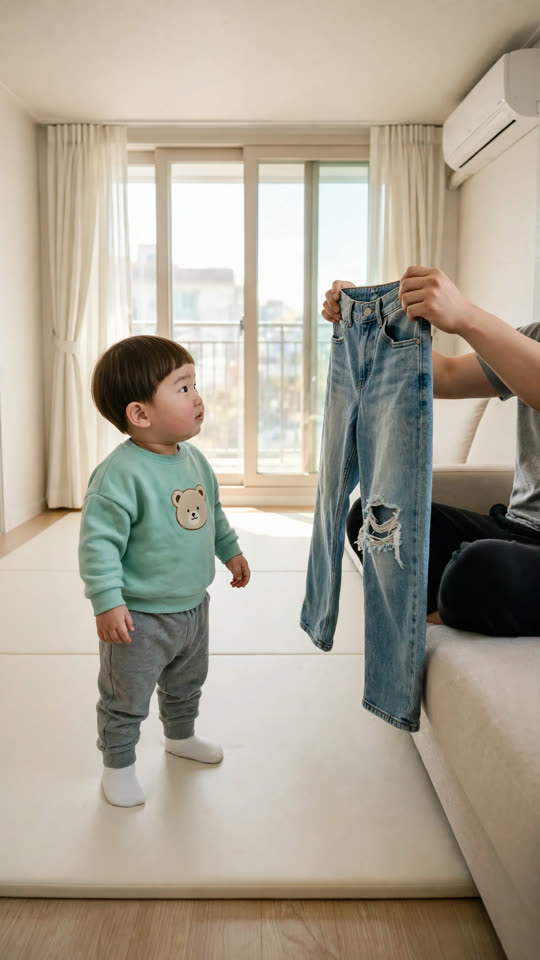
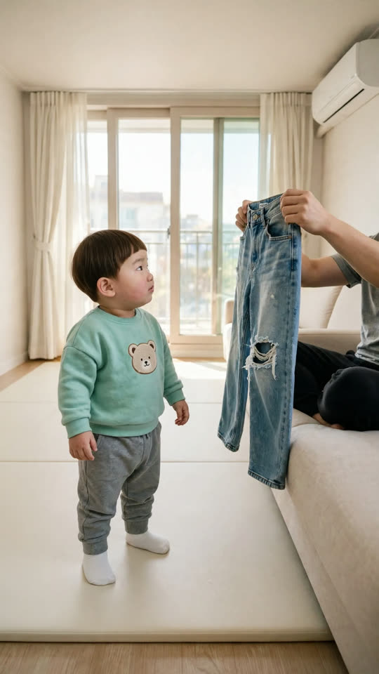
2. 도윤 «아빠! 옷 망가져떠!»
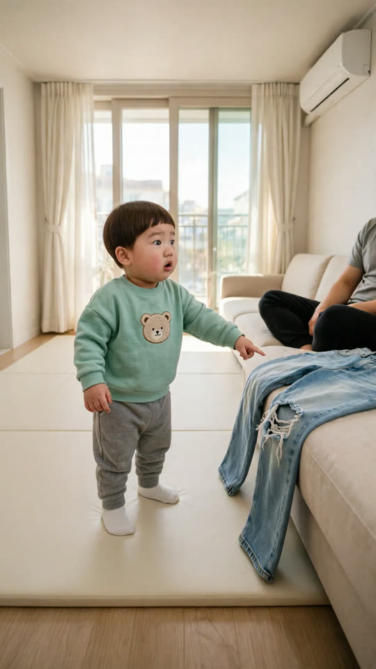
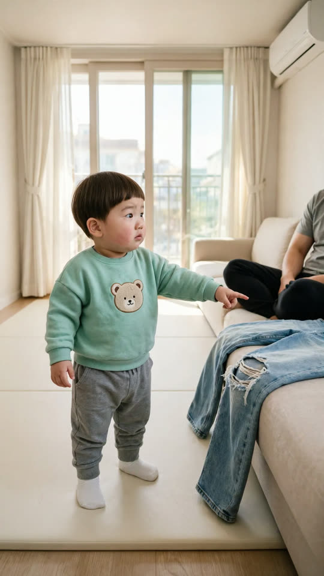
A는 입이 벌어져 있음(립싱크 규칙 2) → B
3. 아빠 «아니야~ 원래 이렇게 나온 옷이야.»
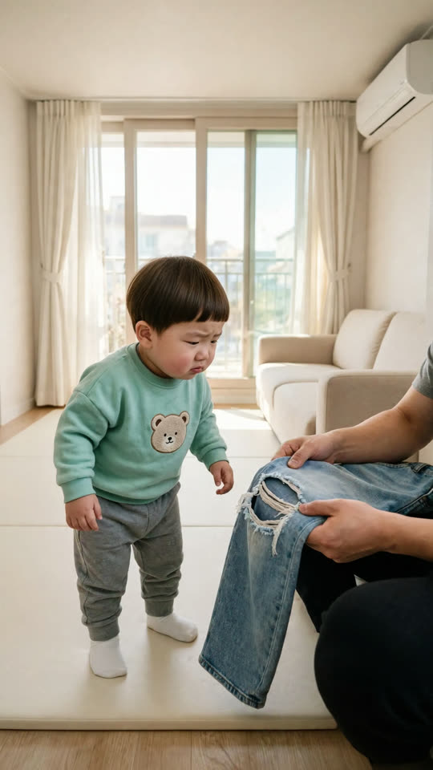
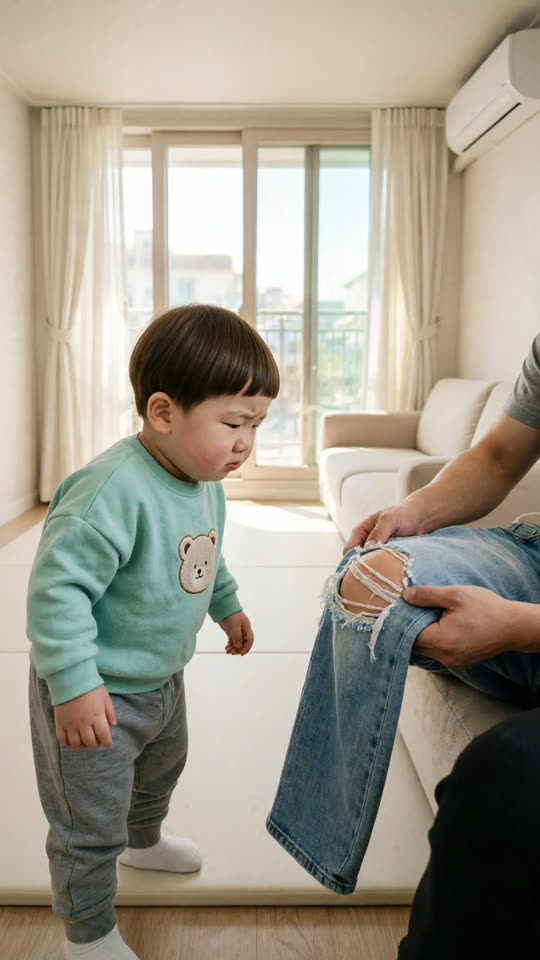
4. 도윤 «아빠 넘어져떠?»
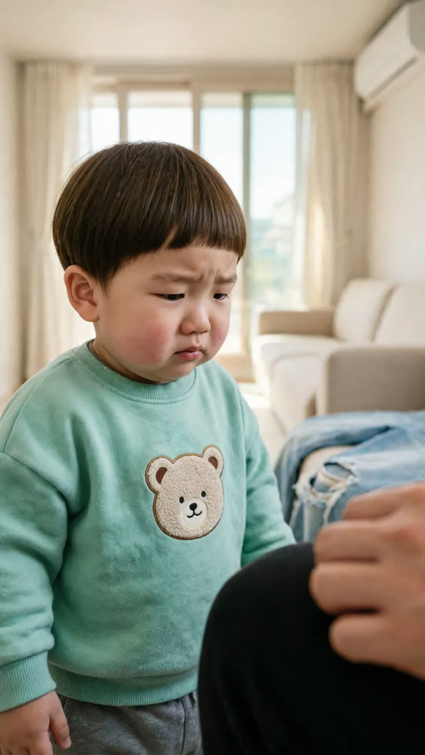
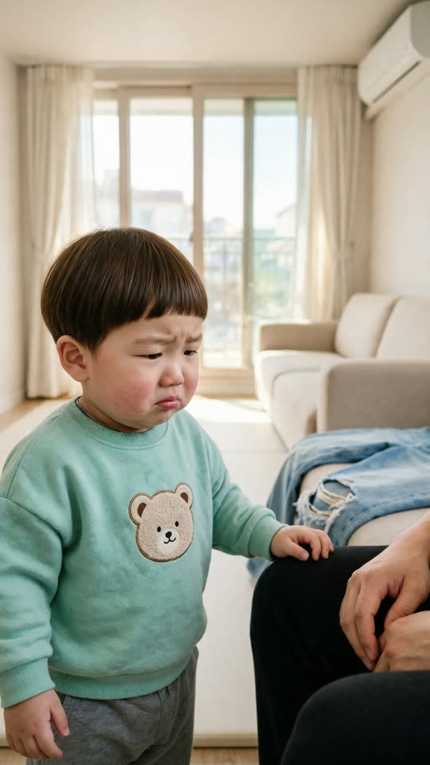
둘 다 울먹이는 얼굴 — B가 덜 함
5. 아빠 «안 넘어졌어~ 멋 내려고 산 거야.»
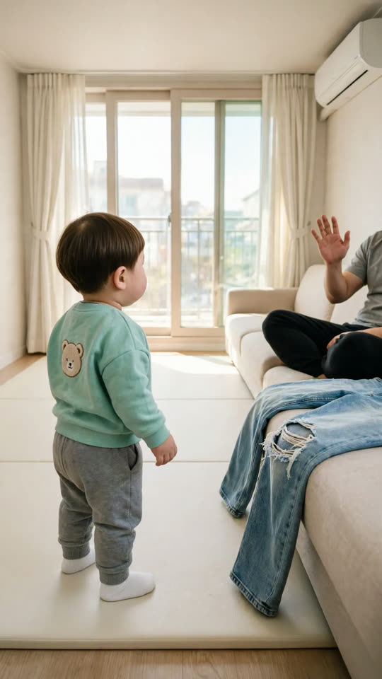
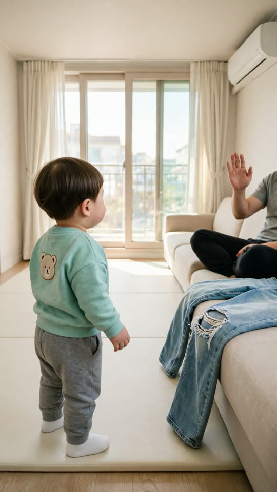
6. 도윤 «갠차나. 안 울어도 돼.»
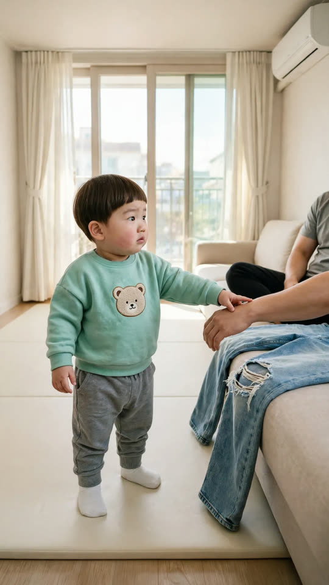
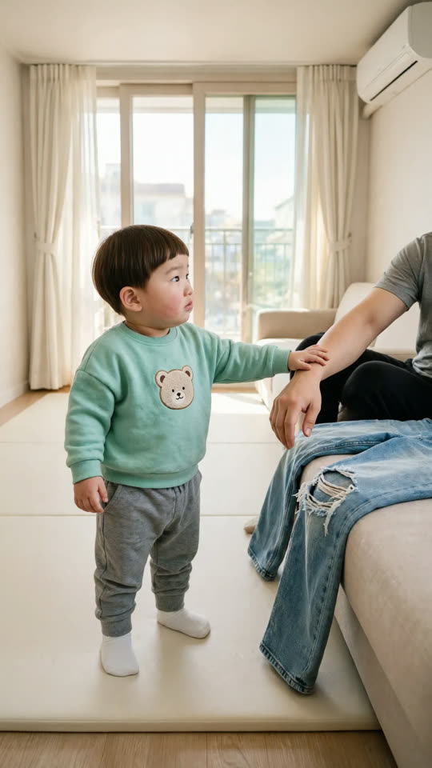
B가 도윤이 손이 아빠 팔 위
7. 도윤 «도유니가 호~ 해 줄게.»
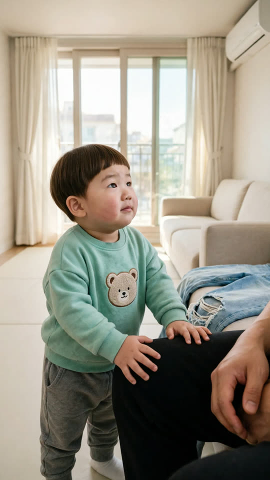
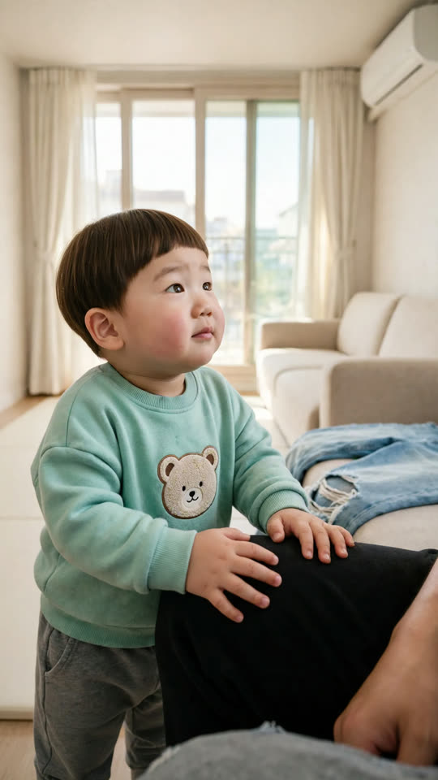